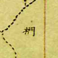
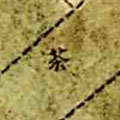
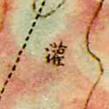
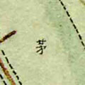
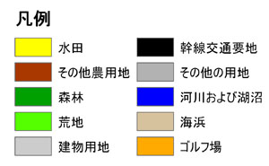

歴史的農業景観閲覧システムとは、明治時代初期に作成された迅速測図と関連するデータを公開しているサイトです。
以下のコンテンツを公開しています。
これらのコンテンツはクリエイティブ・コモンズ 表示 - 2.1 日本 ライセンス、もしくはリンク先にライセンスの表示がある場合、そのライセンスの下で提供されています。
ご利用する場合、出典として「農研機構農業環境変動研究センター」を明記頂ければ、許可申請は必要ありません。なお、今後の研究の参考にさせて頂きたいので、ご利用した事例を habs_request＠ml.affrc.go.jp（＠を半角に変えてください）までご連絡頂ければ幸いです
迅速測図とは、明治初期から中期にかけて行われた簡便な測量法とその成果の地図のことです。関東地方では明治13(1880)年から明治19（1886）年にかけて平野部から房総半島を対象に作成されました。以下のサイトも参考になりますので、ご覧下さい。
代表的なものは以下になります。
| 画像 | 説明 |
|  | 樹林地です。具体的な樹種が書かれていることがあります。 |
| 水田です。 | |
| 畑です。 | |
|  | 茶畑です。同じ色で「桑」(桑畑のこと)と書かれている場合もあります。 |
|  | 左から順に、灌木地、荒地、樸叢地です。灌木地と同じ色で、「曠」と書かれている場合もあります。これらの土地利用は、背の低い樹木だったと考えられます。 |
|  | 茅場です。同じ色、もしくはもっと青い色で、「牧」(牧場のこと)、「草」と書かれている場合もあります。これらは、樹木のない草本主体の土地利用だったと考えられます。 |
ただし、迅速測図は図幅間で色調が異なったり、スキャン作業中に色調が変わる場合もありますので、ご注意ください。
土地利用図の分類は、国土交通省の国土数値情報土地利用メッシュ（平成9年）に基づいています。凡例は、以下の通りです。

厳密には評価していませんが、誤差の大きな所で100ｍ程度の誤差がある場合があります。
迅速測図の幾何補正データの精度については、以下の文献があります。
復刻版として刊行されているのは、この地域だけになります。
およそ1/1万まで拡大可能です。ただし元の地図が1/2万ですので、あくまで表示の拡大だということにご注意ください。
現在の所，GISデータとしてのダウンロードは出来ません。GISの背景として利用したい場合は，Finds.jp様より提供されている歴史的農環境WMS配信サービスをご利用ください。
また一部の範囲については，日本地図センター，マップショップなどで入手できます。
以下のファイルを使用して下さい。
ただし、ファイルのサイズが大きいので、画像の表示に時間がかかったり、動作が遅い場合があります。
KML用のファイルの作成に当たっては、GDAL2Tilesを利用しました。また、Google Earth用表示ファイルは、マップ・コンシェルジュの古橋大地氏よりご提供頂きました。
地図だけを表示したものは、こちらから見ることが出来ます。
歴史的農業環境閲覧システム は クリエイティブ・コモンズ 表示 - 2.1 日本 ライセンスの下で提供されています。利用にあたっては、以下の条件を遵守して頂ければ、申請の必要はありません。
ただし、利用により発生するいかなる損害についても、責任はおいません。詳細については，クリエイティブ・コモンズ 表示 - 2.1 日本をご参考ください。
また、利用された場合habs_request＠ml.affrc.go.jp（＠を半角に変えてください）までご連絡頂ければ幸いです。
上と同じく、habs_request＠ml.affrc.go.jp（＠を半角に変えてください）までご連絡ください。